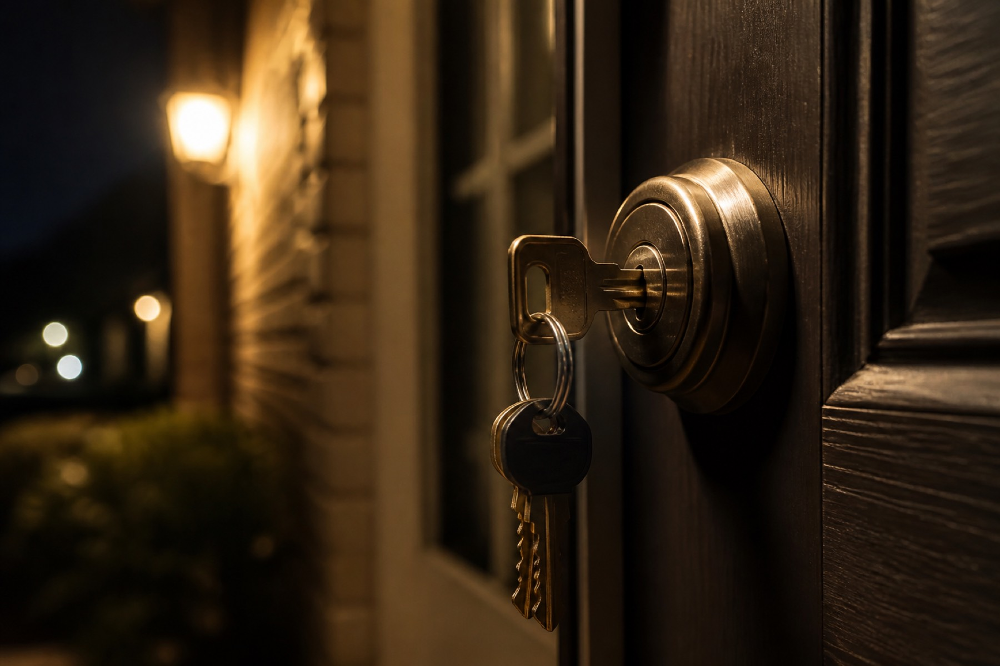
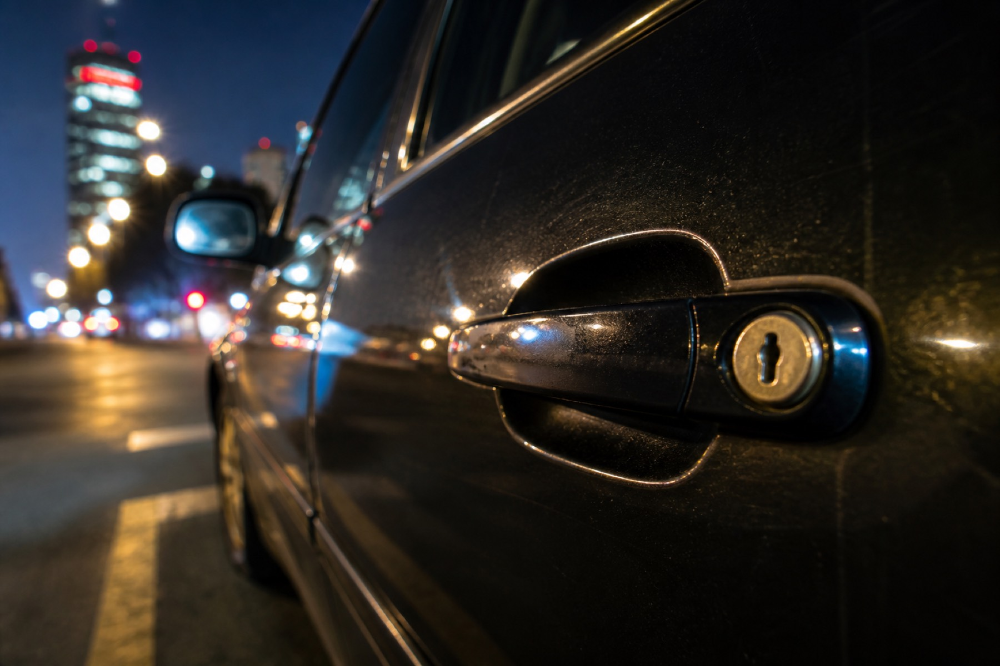
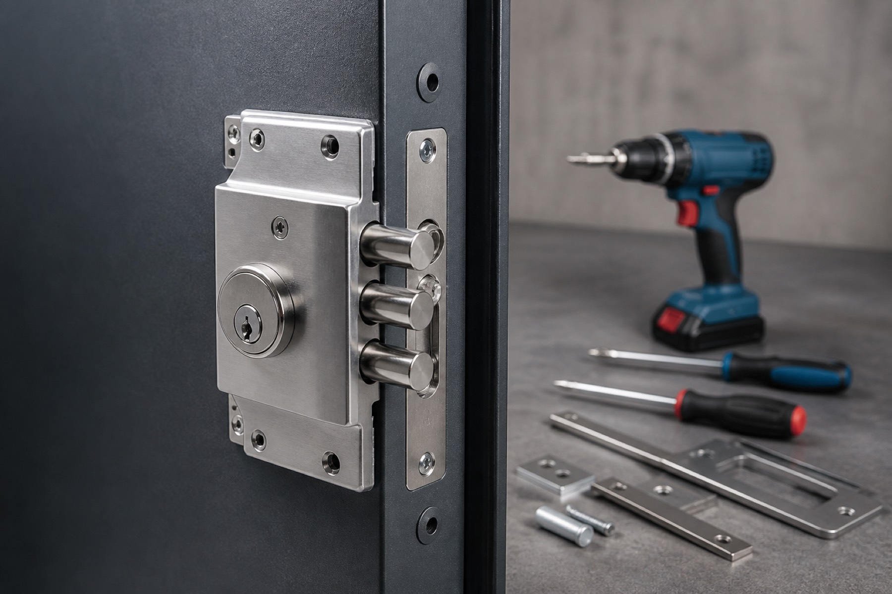

Apertura de casa
Si las llaves se quedaron adentro o la chapa no abre, coordinamos la atención a domicilio.
Consultar ↗Cerrajería 24 horas · CDMX
Cerrajería 24/7 Urgente atiende en Ciudad de México de día y de noche. Mándanos un WhatsApp y coordinamos la salida.
01 / Servicios
Apertura de casas y autos, cambio de chapas y respuesta las 24 horas. El primer paso es un mensaje.

Si las llaves se quedaron adentro o la chapa no abre, coordinamos la atención a domicilio.
Consultar ↗
Llaves dentro del auto o cerradura trabada: escríbenos y vemos cómo salir del apuro.
Consultar ↗
Cambio o revisión de chapas cuando hay que dejar la puerta segura otra vez.
Consultar ↗De madrugada, en domingo o entre semana. Si es ahora, escríbenos ahora.
Pedir ayuda ↗02 / Cómo pedimos
Sin formularios. Nos dices qué pasó y en qué colonia estás.
Cuéntanos si es casa, auto o cambio de chapa, y en qué parte de CDMX estás.
Te decimos cómo seguimos y coordinamos la atención.
Salimos a resolver la urgencia en Ciudad de México.
03 / CDMX
04 / Preguntas frecuentes
05 / Contacto
Mándanos un WhatsApp y coordinamos la cerrajería en CDMX.
Hablemos por WhatsApp ↗